|
DIFERENCIACI�N DE LAS CUATRO SUBESPECIES ESTADOUNIDENSES DE
Terrapene carolina EN INDIVIDUOS JUVENILES
Txema L�pez, 2007
No es dif�cil
encontrar en los libros o navegando un poco por internet una
descripci�n de las diferencias entre las 4 subespecies norteamericanas
de Terrapene carolina, sobre todo en sitios estadounidenses.
Sin embargo, estas descripciones suelen mostrar dos carencias cara al
usuario espa�ol y europeo en general. Obviando el idioma, la primera
de ellas es que las diferencias se ilustran siempre sobre animales
adultos, y a veces muy viejos, de origen salvaje que han difuminado ya
en parte o totalmente su pigmentaci�n original y la segunda, que las
Terrapene suelen considerarse las tortugas de �juguete� o de
�usar y tirar� por parte de los aficionados americanos, ya que muchas
de ellas son recolectadas a�n hoy en d�a en su medio natural, pese a
la prohibici�n existente en muchos estados. Esto hace que la
informaci�n disponible sea muy somera o de tipo cient�fico, elaborada
por bi�logos y poco orientada al aficionado medio. El hecho de que
tambi�n est� prohibida la exportaci�n de las tortugas de caja implica
que la mayor�a de los animales disponibles en Europa sean juveniles,
descendientes de los pocos supervivientes de las exportaciones masivas
llevadas a cabo tras la prohibici�n del comercio de las Testudo
en Europa. Tras la desaparici�n temporal de los comercios de las T.
hermanni y T. graeca, durante los 80 y hasta mediados de
los 90, el mercado de mascotas se aprovision� de las hasta entonces
nada conocidas tortugas de caja americanas. Su bajo precio (entre 18 y
60 euros), la falta de informaci�n y las malas condiciones en que se
manten�an unos animales salvajes, que hab�an permanecido hacinados
largo tiempo desde que fueran recolectados, muchas veces durante la
hibernaci�n, hizo que murieran la inmensa mayor�a de ellos. Los que no
murieron y consiguieron adaptarse lo hicieron s�lo por su fortaleza,
puesto que ven�an fuertemente parasitados y estresados, siendo la
informaci�n disponible en la �poca m�s bien muy escasa. Estas
circunstancias alimentaron tambi�n la leyenda de que las tortugas de
caja son animales huidizos y t�midos. Nada m�s lejos de la realidad.
Estos pocos
supervivientes, en un peque�o n�mero, han conseguido ser reproducidos
en cautividad por algunos aficionados entre los que me incluyo, tras
haber conseguido juntar varios de estos animales importados y algunos
pocos de segunda generaci�n. Gracias a esto, se ha conseguido que no
sean tan dif�ciles de de encontrar en el mercado europeo como en un
tiempo lo fueron, sobre todo entre 1997 y 2002. No obstante, no todas
las subespecies se encuentran con igual facilidad, y la explicaci�n es
bastante sencilla. El �ltimo estado que permiti� la exportaci�n de
tortugas de caja fue Lousiana, donde conviven principalmente dos
subespecies: la Terrapene carolina major y la Terrapene
carolina triunguis, y mucho ojo, sus intergrados, que en ciertas
zonas son realmente abundantes. En menor extensi�n se da la
Terrapene carolina carolina. La que no aparece de ninguna manera
en Louisiana es la Terrapene carolina bauri, circunscrita casi
en su totalidad en Florida, que ya muy pronto prohibi� las
importaciones. Es por esto que las Terrapenes que m�s
f�cilmente vamos a encontrarnos son las T.c. major, por otra
raz�n a�adida: al ser la subespecie de mayor tama�o, tambi�n es la que
mayor n�mero de huevos pone , y por extensi�n la que m�s cr�as
produce. En segundo lugar encontramos las T.c. triunguis,
luego, a una distancia considerable las T. c. carolina y
anecd�ticamente la T. c. bauri. Quien disponga de animales
sueltos de la �poca, me atrever�a a asegurar en la mayor�a de los
casos que se trata de ejemplares de T. c. major, T.c.
triunguis o sus intergrados.
Todas estas razones
me llevan a intentar dilucidar la subespecie de los animales que
podemos adquirir ilustrando la explicaci�n con animales juveniles. Va
a ser bastante dif�cil hacerse hoy en d�a con un animal adulto y creo
que puede ser de gran ayuda enfocar este tema con animales juveniles.
En la medida de lo posible voy a intentar tambi�n distinguir los
posibles intergrados (cruces entre subespecies, por tanto �no
h�bridos�). Voy a intentar seguir la explicaci�n que da Dodd en su
fabuloso libro sobre las tortugas de caja para explicar las
diferencias.
Hay un concepto que
antes de entrar en detalles es interesante conocer:
La f�rmula
falangeal es una manera de comparar animales contando el n�mero de
falanges que tienen en cada uno de sus d�gitos. Puede ser utilizada
para estudiar la filogenia del animal (a grosso modo la familia
de especies en que se encuadra) o para predecir el uso que da a sus
manos y pies. Se suele dar con un n�mero simple. En la siguiente foto
vemos la foto de la extremidad de una ardilla, que tiene cinco dedos y
una f�rmula falangeal de 5 n�meros, los que componen el n�mero de
falanges de cada dedo separados por guiones: 3-4-4-4-4 .
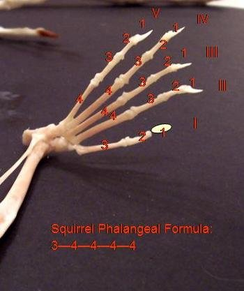
fig. 1 formula
falangeal de una ardilla. Foto de
Mammalian Stances: Plantigrade, Digitigrade, and Ungligrade.
Murray State University.
En las diferentes
subespecies de Terrapene carolina, la formula falangeal var�a
seg�n los estudios de Minx, y con una radiograf�a de las patas podemos
ayudar a determinar la subespecie de animales que no est�n demasiado
claros.
Terrapene
carolina major
Empezamos con la
Terrapene que quiz� sea la m�s com�n en los terrarios europeos.
En principio, es la subespecie m�s grande de todas, pero en los
juveniles es algo muy relativo. No van a ser necesariamente las que
m�s r�pido crezcan, pero si las que van a tener un periodo de
crecimiento m�s largo y que mayor tama�o van a alcanzar. Su color va a
ser habitualmente marr�n oliv�ceo, en ocasiones con un dibujo radiado
con manchas o l�neas muy finas y muy abundantes en cada placa del
caparaz�n, en ocasiones casi puntos. Tambi�n podemos encontrar
animales con un patr�n radiado y sim�trico, pero son de l�neas muy
escasas y menos comunes que las completamente marrones o punteadas.
Existe tambi�n una poblaci�n muy oscura, casi negra, pero rara vez la
vamos a encontrar, puesto que es de la zona de Florida y ya hemos
dejado claro que nuestro animales van a provenir en su inmensa mayor�a
de Louisiana.
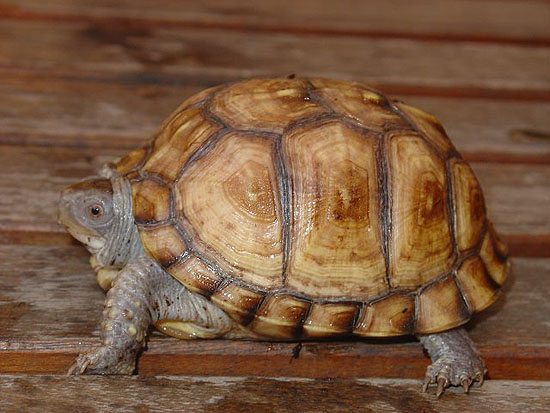
fig.2
juvenil de dos a�os y medio de edad de Terrapene carolina major.
Su caparaz�n es el m�s aplanado de todas las
subespecies, puesto que habita terrenos cenagosos y es la mejor
nadadora de todas, pese a que lo hace bastante mal. Suelen tener un
fald�n posterior, que las ayuda a mantenerse sobre el terreno cenagoso
que habitan, sobre todo en �poca de lluvias. Los juveniles tienen una
quilla que se suele perder en la edad adulta. Las patas delanteras
son amarillas en la parte anterior y marr�n claro � oscuro en la
posterior. La cabeza es, o bien marr�n completamente, o bien presenta
una serie de lineas amarillas anchas y m�s o menos conexas, aunque lo
m�s com�n es que sea oscura con peque�as manchas amarillas. Los ojos
son saltones. El plastr�n suele ser marr�n con sombras en las uniones
de las placas, rasgo que a veces tambi�n se da en las placas del
caparaz�n. En los machos se puede adivinar una ligera concavidad, casi
m�s patente al tacto que a la vista en los juveniles y un ligero
engrosamiento y una mayor longitud de la cola. En ocasiones ya se nota
el color m�s rojizo de los ojos y m�s colorido en general. La f�rmula
falangeal seg�n Minx (1992) es 2-3-3-3-2 para las patas delanteras y
traseras (la condici�n primitiva de los criptodiros es 2-3-3-3-3). Las
patas traseras pueden presentar un dibujo consistente en una linea
amarillenta que las contornea, y tienen 4 u�as en las patas traseras y
5 en las delanteras.

fig.3 Detalle de
la pata con trasera con 4 u�as, rasgo caracter�stico de las Terrapene
carolina major y las Terrapene carolina carolina.

fig.4
Detalle de la cabeza y patas delanteras con cinco u�as. N�tese la
posici�n elevada de los ojos y la aparici�n de manchas amarillas en la
cabeza. El color rojizo de los ojos y la ligera concavidad del
plastr�n nos hacen pensar que estamos ante un macho.

fig.5 Detalle
del fald�n caracter�stico de las major.
Terrapene
carolina triunguis
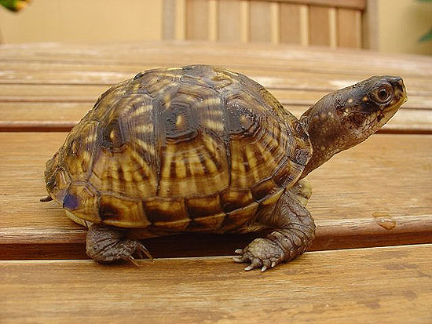
fig.6 juvenil de tres a�os de edad de Terrapene
carolina triunguis.
La Terrapene
carolina triunguis es una subespecie de tama�o medio, pero insisto
en que el tama�o de los juveniles de la misma edad viene m�s
determinado por razones gen�ticas y de alimentaci�n que por el tama�o
que va a tener el animal en la edad adulta. La demostraci�n viene por
estos dos animales, (fig. 7) nacidos de padres diferentes en la
misma �poca y que muestran tama�os tan desiguales. Esta diferencia no
es anecd�tica, puesto que se repite sistem�ticamente todos los a�os
para los hijos de esas dos hembras. El color var�a entre marr�n oscuro
casi negro y el marr�n claro, con un patr�n sim�trico y difuminado o
completamente marr�n, no se suelen ver animales con puntos amarillos
peque�os como las major, si hay alguno con puntos suelen ser
grandes. El caparaz�n es muy abombado ya desde bien peque�as y suele
tener quilla.

fig. 7 Dos
triunguis nacidas el mismo mes y el mismo a�o.

fig. 8 Detalle
de la cabeza con manchas rojas y blancas, lo cual nos indica que este
juvenil es un macho. La cabeza es m�s estrecha y alargada que la de la
major de las fotos anteriores, y los ojos no son tan saltones.
Obs�rvese tambi�n el patr�n difuminado del plastr�n.
La piel es marr�n,
pero muy variable. Desde un marr�n claro rojizo a un marr�n oscuro,
salpicado de manchas amarillas, incluso blancas en las hembras,
siendo las patas delanteras de los machos rojas en su parte anterior,
incluso totalmente rojas en ocasiones. Los juveniles con manchas rojas
van a ser casi seguro machos, lo cual no quita que haya hembras con
unas preciosas manchas anaranjado-rojizas. Las patas de las hembras
nunca son rojas, son amarillas. Los ojos no son saltones. Los
plastrones pueden tener cierto patr�n o no tener ninguno, pero suele
ser marr�n claro, y en los machos no se forma concavidad. La cola se
nota algo m�s gruesa y la cloaca es m�s distal incluso en juveniles.
En animales adultos, la cola del macho de triunguis es la m�s
corta, mucho m�s que la de las major. En los juveniles, en
ambas subespecies, tan s�lo se aprecia la separaci�n relativa de la
cloaca. La f�rmula falangeal de Minx (1992) es habitualmente 2-3-3-2-2
para las patas delanteras y 2-3-3-3-1 para las traseras, aunque en
general las triunguis son bastante variables en este punto.
Presentan cinco u�as en las patas delanteras y tres en las traseras,
aunque no es raro ver animales con cuatro o mezcladas.
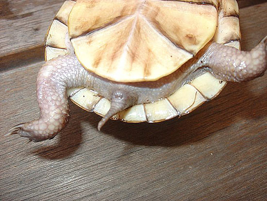
fig.9
Detalle de la cola de un macho joven. La cloaca es algo m�s distal que
en la hembra, fig. 10, pero �sta es m�s ancha. Se ve claramente en la
fig. 11.
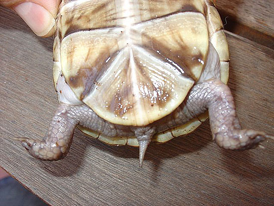
fig. 10 Detalle
de la cola de una hembra joven.
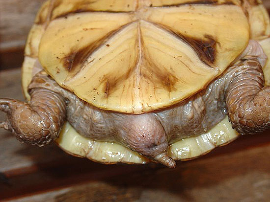
fig. 11 Detalle
de la cola de un macho semiadulto.
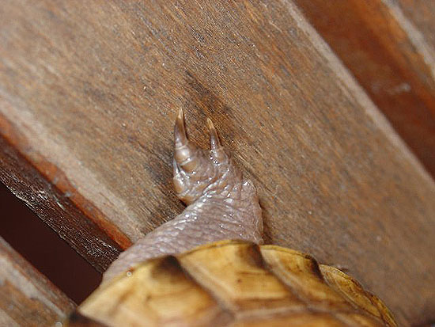
fig.12 Detalle
de la pata traseta de la T. c. triunguis, con tres u�as.
Terrapene
carolina carolina
Son ya m�s
dif�ciles de encontrar respecto a las otras, y se encuentran por tanto
muchos intergrados en el mercado, sobre todo con major y
triunguis. Vuelvo a insistir en que, aun siendo a la edad adulta
de tama�o medio, en los juveniles depende m�s de la gen�tica y de la
alimentaci�n el crecimiento que de otra cosa. Es la m�s variable de
todas, hay ejemplares completamente marrones, e incre�blemente
coloridos con l�neas muy marcadas sobre fondo negro. Lo que es extra�o
es ver animales con coloraci�n desva�da. El color predominante en el
caparaz�n es el amarillo o naranja, con el negro y el marr�n, que es
abombado, pero no tanto como en las triunguis. Un dibujo muy
com�n consiste en placas de color negro con grandes marcas marrones
anaranjado sin formar un patr�n claro.

fig. 13
Juvenil de tres a�os de Terrapene carolina carolina, variedad oscura
de plastr�n y caparaz�n negros, con estampado t�pico de carolina
carolina y presente s�lo en esta sp.
Tienen una quilla mediodorsal,
tambi�n menos pronunciada que sus primas anteriormente mencionadas. El
color de la cara es amarillo o naranja fuerte y blanco, aunque a veces
tambi�n aparece el rojo. Las patas delanteras de los machos, como las
de las hembras, suelen ser predominantemente amarillas, aunque pueden
tener manchas m�s anaranjadas e incluso rojas. El plastron suele
tener patr�n, aunque se dan animales con un plastr�n marr�n claro como
las major o incluso negro. La cola en los machos se aproxima m�s a la
de las major que a la de las triunguis en tama�o y
distalidad. La formula falangeal seg�n Minx (1992) es 2-3-3-3-2 en
un 71,4 % de los espec�menes estudiados para las extremidades
anteriores, el resto son 2-3-3-2-2 como las triunguis. En los
miembros traseros, la f�rmula falangeal es 2-3-3-3-2 o 2-3-3-3-1 en un
50%. Son, sin duda, la subespecie m�s variable y m�s confusa en
ciertos individuos. Lo que siempre se cumple es que tienen cuatro u�as
en las patas traseras y cinco en las delanteras.
Terrapene
carolina bauri
La Terrapene carolina bauri es un animal extraordinariamente
dif�cil de ver en cautividad en Europa. No es f�cil de encontrar
incluso en Estados Unidos, y su tenecia en Florida est� prohibida. Si nos ce�imos a
nuestro enfoque probabil�stico, si tienes un animal negro con un
precioso patr�n radiado amarillo, casi seguro que es una especie
diferente que en esta ocasi�n no tratamos, la Terrapene ornata.
Las Terrapene carolina bauri son tortugas relativamente m�s grandes que las triunguis o las
carolina. Sin embargo, la bibliograf�a dice que son algo m�s
peque�as, pero desde luego, no es lo que yo he observado en individuos
adultos. El caparaz�n es negro con un patr�n estriado
amarillo, con lineas finas.
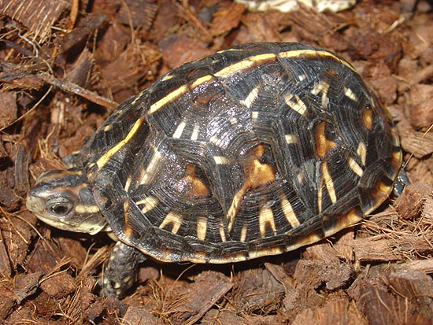
fig.14 juvenil
de tres a�os de edad de Terrapene carolina bauri, hembra , animal en
forma de �tienda canadiense� caracter�stico y privativo de esta sp.
De vez en cuando
aparecen animales con l�neas anchas denominados entre los aficionados
�High yellow�. El caparaz�n suele ser bastante abombado, como las
triunguis, y en muchos casos con forma de �tienda canadiense�.
Tambi�n tienen un fald�n bastante pronunciado. La cabeza es bastante
estrecha y de color negro o gris oscuro, con dos franjas amarillas
caracter�sticas que la cruzan longitudinalmente. El color de los ojos,
sean machos o hembras, siempre es marr�n oscuro, nunca rojo. Las patas
son negras y amarillas, nunca hay manchas naranjas o rojas. El
plastron tiene marcas de patr�n o es completamente marr�n gris�ceo.
La f�rmula falangeal es 2-3-3-3-2 para los miembros delanteros y
traseros, siendo en general la subespecie menos variable. Pueden tener
tres o cuatro u�as en las patas traseras.
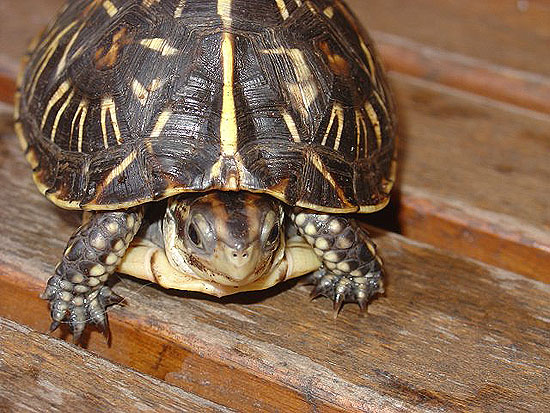
fig. 15 detalle
de la cabeza, con sus dos l�neas amarillas caracter�sticas de
Terrapene carolina bauri.

fig. 16 detalle
de la pata con sus 4 u�as.
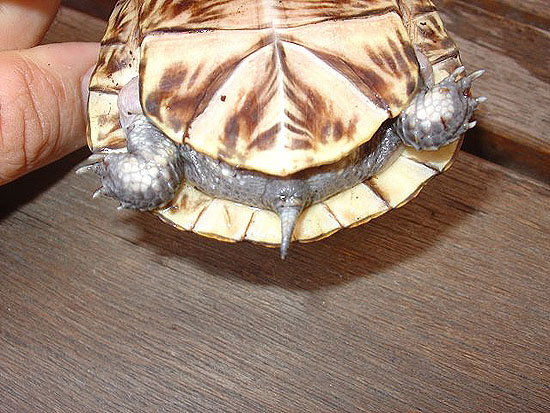
fig 17 detalle
de la cola de un macho joven.
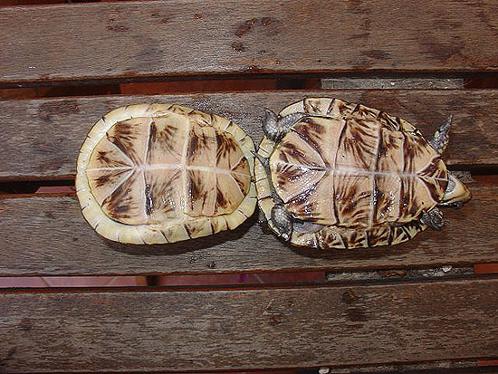
fig 18
comparativa del plastr�n de un macho y una hembra.
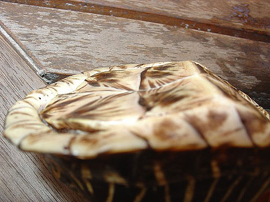
fig. 19 plastr�n
c�ncavo de un macho joven de T. c. bauri.
C�mo distinguir
cr�as reci�n nacidas.
En algunos casos es
realmente arduo. Las caracter�sticas de ciertos animales reci�n
salidos del huevo var�an muy poco. Es pr�cticamente imposible
distinguir un beb� major de un carolina. Las
triunguis se distinguen porque tienen tres u�as generalmente en
las patas traseras (pero como tengan cuatro, que no es descabellado,
estamos en las mismas). Los que claramente se distinguen son las bauri,
que aunque tienen un alto porcentaje de individuos con tres u�as, son
de color negro con una linea dorsal amarilla claramente marcada en la
l�nea de la quilla.
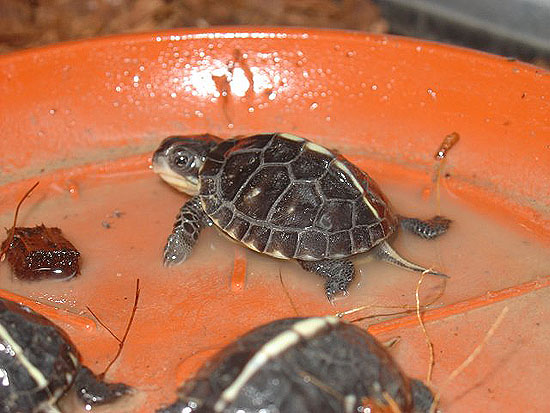
fig. 20 Cr�as de
T. c. bauri, claramente distinguible del resto con su t�pico color
negro y su l�nea amarilla en la zona de la quilla.
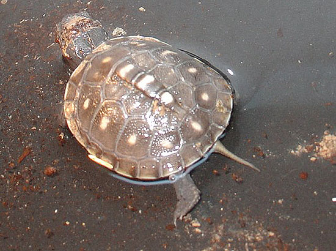
fig. 21 Cr�a de
T. c. triunguis. A simple vista, indistinguible de major o carolina a
no ser por las tres u�as de las patas traseras.
Comparativa
visual de juveniles y animales dif�cilmente clasificables.
Vamos a establecer
ahora una comparativa visual entre las cuatro subespecies de
Terrapene carolina. En la foto inferior se distinguen cuatro
ejemplares t�picos de cada una de las subespecies. En la parte
superior izquierda vemos una major, a su derecha una carolina,
debajo de ella una triunguis y a su izquierda una bauri.
Son cuatro animales tipo, de clasificaci�n indudable. Se aprecia el
fald�n de la major, con su quilla de juvenil, la coloraci�n y patr�n
t�pico de las carolina, el dibujo estrellado amarillo sobre negro de
las bauri y el dibujo difuminado en punteado grueso con
miembros y cabeza roja de las triunguis.

fig. 22 Un
representante de cada subespecie.
En la siguiente
foto vemos los plastrones t�picos de las subespecies:
El plastr�n
amarillo con marcas marrones en los escudos de las major, muy
similar en las triunguis, s�lo que estas no suelen tener zonas
marr�n difuso en medio de las placas, sino m�s bien un patr�n
desva�do, el patr�n t�pico de las bauri bajo a la izquierda y
el de las carolina carolina, muy variable pero en este caso muy
t�pico. Tampoco son nada extra�os los plastrones negros.
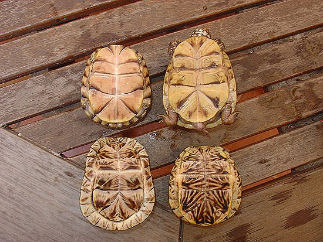
fig. 23
Plastrones de un representante de cada sp.
Ahora bien, la
variabilidad de estas especies es asombrosa, y voy a ilustrarlo con
comparativas entre individuos de la misma y diferentes subespecies.
Empezamos con algo sencillo, dos triunguis, macho a la derecha
y hembra a la izquierda. La hembra presenta un dibujo de patr�n
desva�do, mientras que el macho presenta un plastr�n marr�n claro
t�pico de las triunguis, bastante similar al de las major.
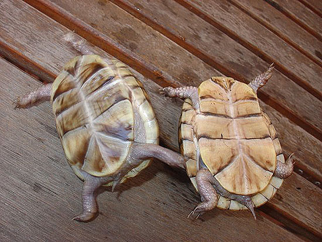
fig. 24 macho y
hembra de Terrapene carolina triunguis. La concavidad del macho es
casi inexistente, aunque comparativamente se nota, obs�rvese la
longitud de la cola.
Vamos a ver ahora
las diferencias de abombamiento del caparaz�n entre las diferentes
subespecies: en la siguiente foto se aprecia la diferencia entre una
major (izquierda) y una triunguis (derecha), dos
animales de tama�o y coloraci�n similar.

fig. 25
izquierda T.c. major, m�s plana, derecha T .c. triunguis, m�s
abombada.
En la siguiente
foto hacemos la comprobaci�n entre una triunguis (izquierda) y
una carolina (derecha). La carolina es un ejemplar
marr�n poco com�n y luego abundaremos en por qu� es una carolina.
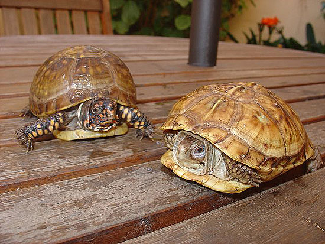
fig .26
izquierda Terrapene Carolina triunguis, m�s abombada. Derecha
Terrapene carolina carolina.
En la siguiente,
pese a estar tomada desde arriba, se nota la diferencia entre una
bauri (izquierda) y una carolina carolina. La foto la he
tomado as� para que se aprecie que la bauri es supernumeraria y
la carolina hiponumeraria. Tambi�n se observan sus patrones
t�picos. Tambi�n la comparamos con una major para que se vea la
diferencia de la forma de ambas, en fotos por arriba y por debajo,
para que se observe como baja el fald�n de la major en
comparaci�n con la carolina. En la foto inferior, comparamos
una bauri con una triunguis.
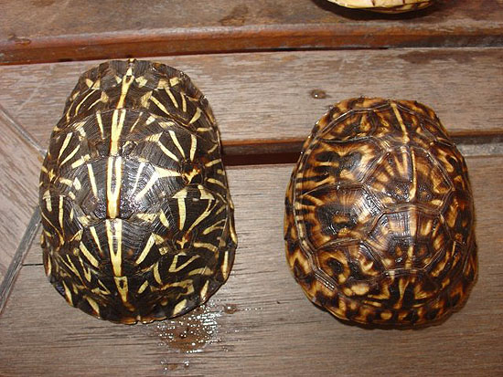
fig. 27
izquierda Terrapene carolina bauri, derecha Terrapene carolina
carolina.
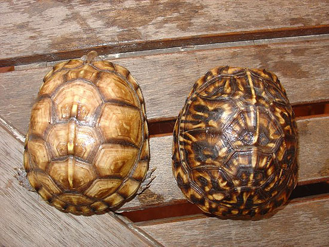
fig. 28
izquierda Terrapene carolina major, derecha Terrapene carolina
carolina.
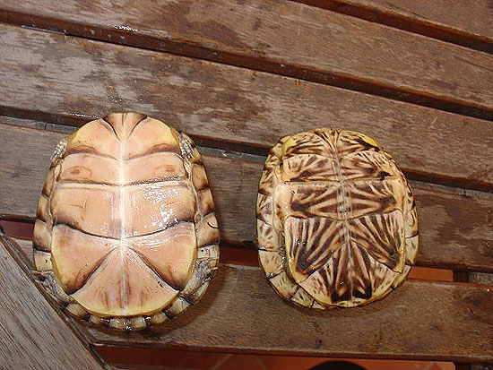
fig. 29 T. c.
major, vista del plastr�n, a su derecha T.c. carolina �standard�
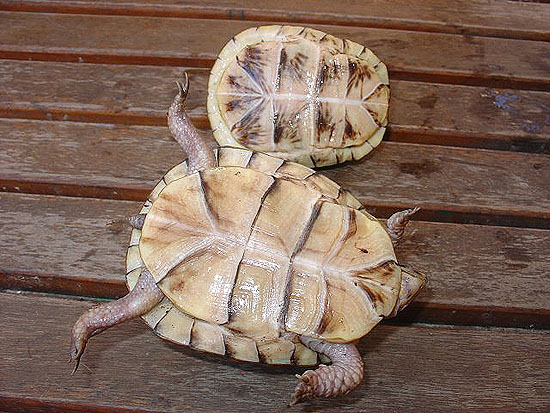
fig 30 T.c.
bauri arriba y T. c. triunguis abajo.
Ahora vamos a
tratar el caso de un animal dudoso. La Terrapene carolina carolina
que antes ve�amos. �Es carolina, triunguis o major?.
Bueno, ya os digo yo que es carolina carolina porque es nacida
de una pareja salvaje de carolina carolina del mismo origen
geogr�fico, pero vamos a razonarlo.
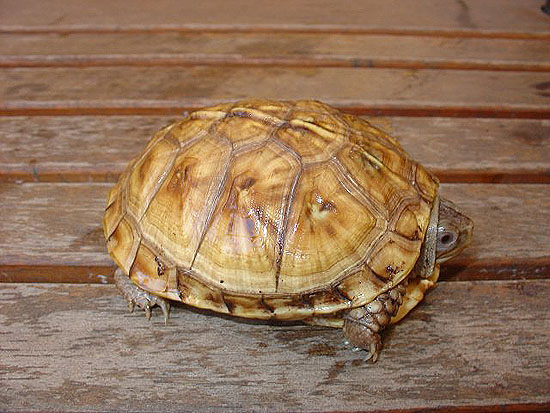
fig.31 Terrapene
carolina carolina con una coloraci�n inusual.
- No es major:
la forma del caparaz�n es bastante diferente, con el ligero faldon de
las major, as� como el ojo m�s alto de las major relativamente en la
posici�n de la cabeza. Las placas est�n bordeadas tambi�n por una
sombra marr�n t�pica de las major que no presenta nuestro
individuo. Esto tambi�n se nota en la foto comparativa del plastron. (carolina
derecha, major izquierda)
- No es
triunguis: Es demasiado plana y tiene 4 u�as en cada pata trasera.
- No es bauri:
Eso es indudable, no es negra.
- Podr�a
argumentarse que es un intergrado, pero cumple perfectamente con todas
las caracter�sticas de la T. carolina carolina, incluida la
variabilidad del color.

fig 32
comparaci�n entre major y carolina. N�tese el �afaldonamiento� de la
parte de atr�s.
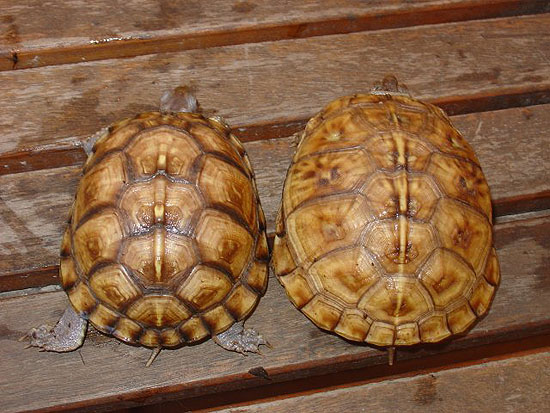
fig 33. Vista
superior de major y carolina.
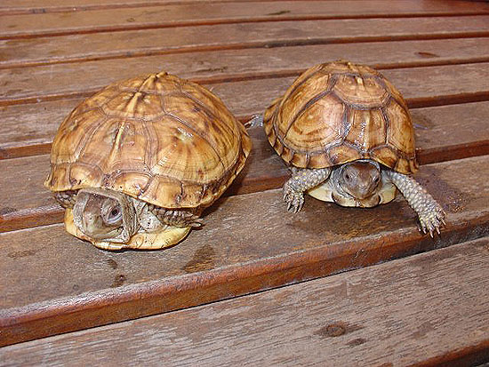
fig. 34 Vista
frontal de major y carolina.
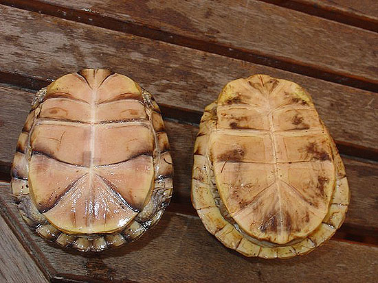
fig.35
comparaci�n de plastrones.
Ponemos ahora la
comparaci�n triunguis y bauri, para no dejar lugar a
dudas:
N�tese que la
triuguis tiene claramente tres u�as en la pata trasera y la
carolina cuatro. El plastr�n de la bauri es totalmente
distinto.

fig 36. Arriba a
la izquierda triunguis, debajo izquierda bauri, derecha carolina.
Por otro lado,
argument�bamos que los machos de triunguis no tienen concavidad
en el plastr�n o es muy leve. Se ve bien en esta foto comparativa con
un macho de bauri. Los machos de major y los de
carolina tambi�n suelen ser bastante c�ncavos.
Por �ltimo,
comparamos con un plastron t�pico de carolina adem�s de los
anteriores. N�tese que pese a la coloraci�n, la forma general del
animal es la misma:
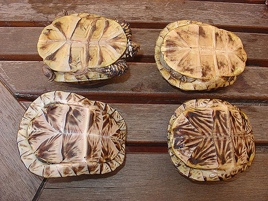
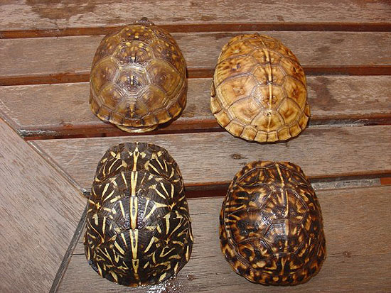
fig 37 y 38
Arriba a la izquierda triunguis, debajo izquierda bauri, derecha
carolina, arriba ejemplar dudoso, debajo ejemplar �standard�.
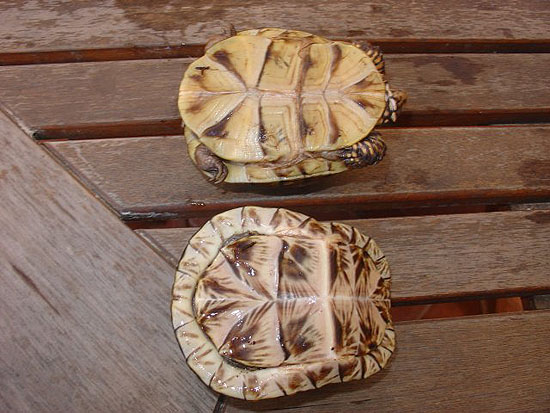
fig. 39 N�tese
la diferencia en la concavidad de dos machos arriba triunguis y debajo
bauri. Es el mismo macho de la figura 16.
Intergrados.
Se da la
circunstancia de que algunos animales presentan caracter�sticas de dos
subespecies que hacen pensar que puedan ser �intergrados�.
T�cnicamente es un h�brido entre dos subespecies, pero al pertenecer a
la misma especie no se puede considerar como tal. Son, en muchas
ocasiones, dif�ciles de detectar,y sin ver a los padres podemos hacer
una identificaci�n err�nea con facilidad. Yo dir�a que los m�s
dif�ciles de detectar son los de triunguis x carolina. Hablando
con el criador del animal de la figura 40, llegu� a la conclusi�n de
que la madre era triunguis y que el padre era carolina. De
hecho le pregunt� porque vi algo extra�o, que no cuadraba en el
animal. Estoy seguro de que al llegar a su edad adulta, ser� m�s f�cil
evaluar las caracter�sticas que lo hacen intergrado, pero de momento,
observo un caparaz�n con un patr�n que es m�s de carolina carolina, y
un color rojo y un fald�n que se me antojan de triunguis,
aunque hay carolina carolina muy rojas. Creo recordar que una
de sus patas ten�a tres dedos, y el criador me asegur� que la madre
los ten�a. En fin, que mi p�lpito result� ser probablemente cierto.
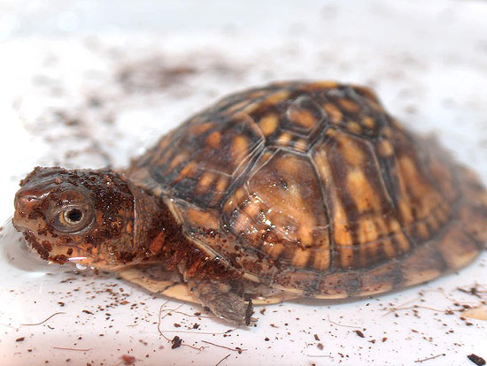
fig. 40 Probable
intergrado de triunguis x carolina. Gracias por la foto a Paquete.
Quiz� los de
bauri sean los m�s f�ciles de
identificar. Aqu� podeis ver un h�brido, probablemente de triunguis
x bauri. Este animal fue fotografiado en Big Gun Swamp, Baker Co.
Florida el 24 de Abril de 2003 por Mike Pingleton (fig 41). No cuadran
ni los puntos, ni el color de las patas y el dibujo de la cara
mantiene en cierto modo las dos l�neas t�picas de las bauri,
pero con el color rojo de las triunguis.
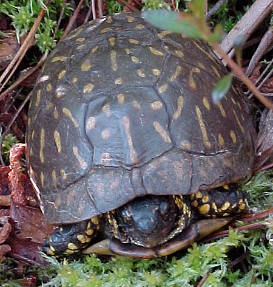
fig. 41 Posible
bauri x triunguis. Foto cedida por
Mike Pingleton.
En fin, tampco debe
preocuparnos en absoluto el hecho de tener un intergrado e incluso
reproducirlo. Hay zonas donde la poblaci�n de intergrados es realmente
alta. En el norte de Alabama, hay un gran �ndice de intergradaci�n
entre T. c. triunguis y T. c. carolina, en el sur entre
triunguis y major, y en el norte de Florida con bauri.
En esta zona se intergradan las cuatro subespecies, con lo cual se
encuentran individuos realmente inclasificables. (Dodd). Por eso mi
opini�n es que, si tenemos la suerte de mantener una pareja de estos
animales, aunque sean de subespecies diferentes, los reproduzcamos
para que no pierdan su capacidad. No son tan comunes en Europa como
para permitirnos el lujo de no poder mantener en el futuro estas
incre�bles criaturas. Los animales reproducidos en cautividad no son
nada t�midos, comparados con sus padres capturados de la naturaleza.
Eso si, no esperemos tener algo parecido a una Testudo, para mi
son animales bastante m�s inteligentes, pero con unos h�bitos muy
distintos.
Bibliografia:
Dodd K.C., North
American Box Turtles, A Natural History. University of Oklahoma
Press, 2001
Minx, P. 1992.
Variation in Phalangeal formulae in the Turtle Genus Terrapene. J.
Herpetol. 26:234-38
Terry Derting Mammalian Stances: Plantigrade, Digitigrade, and
Ungligrade
Mike's Page
|